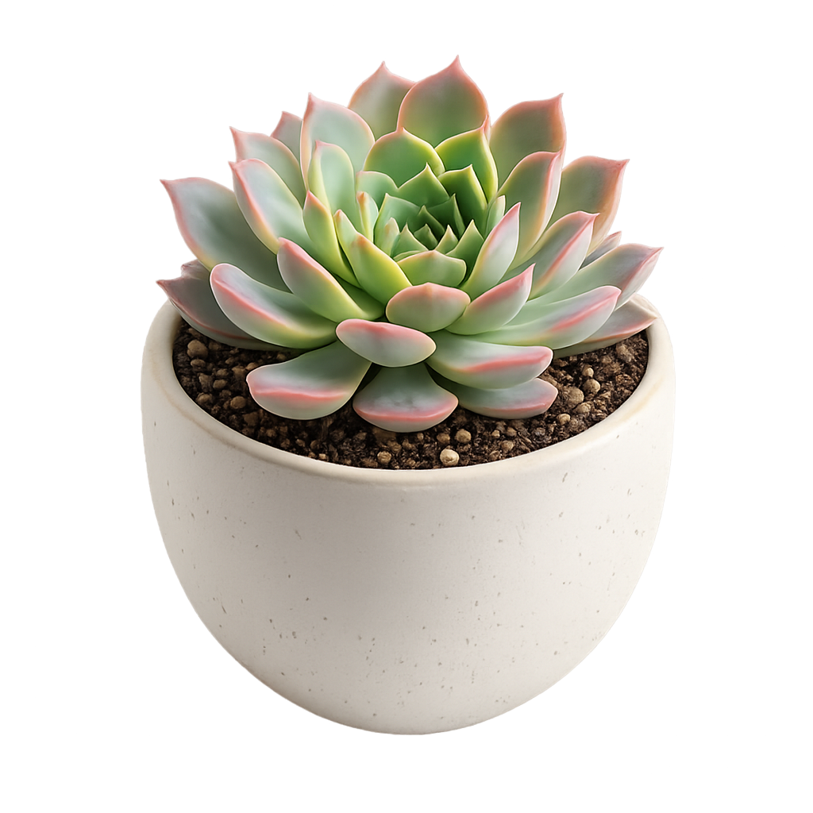
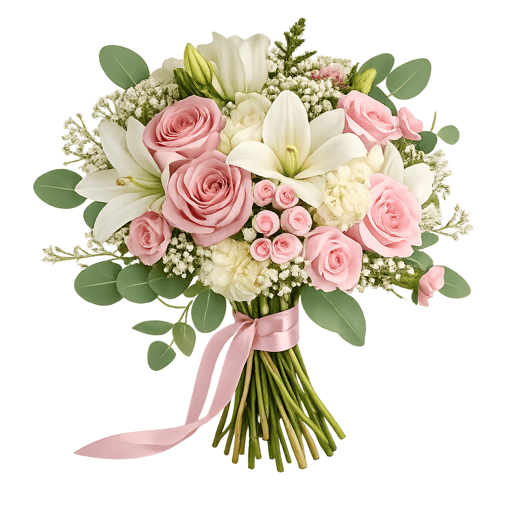
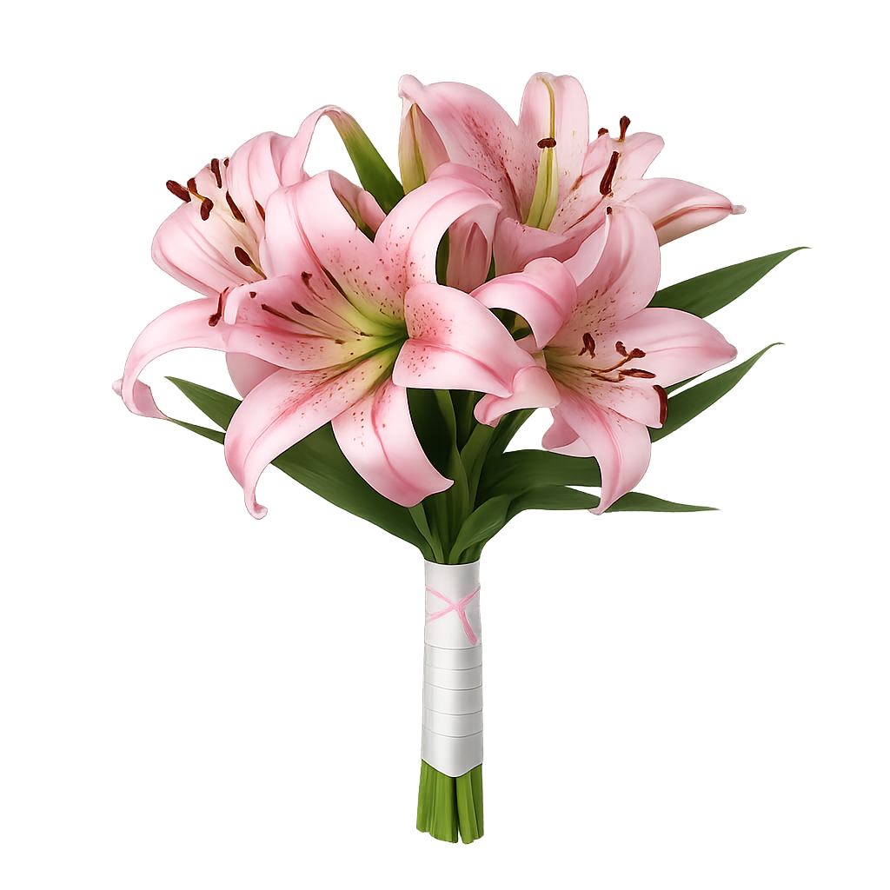

Pion.by — современный сервис доставки цветов по Беларуси. Мы делаем акцент на качестве, свежести и дизайне. Наша миссия - дарить радость и помогать выражать чувства через живые цветы. Каждый заказ — это маленькое событие, к которому мы подходим с особым вниманием.
Что мы предлагаем
- Готовые букеты и авторские композиции
- Готовые букеты и авторские композиции
- Комнатные растения с доставкой
- Быстрая и бережная доставка
Почему выбирают нас
- Только свежие цветы
- Внимание к деталям
- Индивидуальный подход к каждому клиенту
Мы создаём настроение с 2025 года. Pion.by — это не просто магазин цветов, а место, где оживают эмоции. Название выбрано не случайно: пион — символ нежности, процветания и счастливой любви. Именно эти чувства мы вкладываем в каждый букет. Каждое утро мы начинаем с выбора самых свежих цветов, чтобы вы дарили только лучшее. Наши флористы — настоящие художники, которые превращают лепестки и зелень в маленькие шедевры. Мы работаем для тех, кто ценит красоту, качество и индивидуальный подход. Пусть ваш день станет ярче, а близкие почувствуют вашу заботу — вместе с Pion.by. 💐